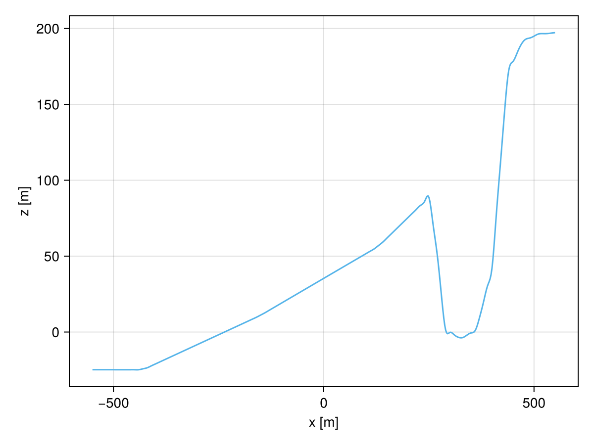

Real topography data from GeophysicalModelGenerator.jl
The Data conversion section describes how to convert DGM data.
This section explains how to obtain topography data for an arbitrary region of the world with GeophysicalModelGenerator.jl and how to make it accessible to TrixiBottomTopography.jl. The resulting data is used in the Cliffs of Moher examples.
The underlying example file can be found here.
Getting an impression of the topography data
The functions geo_topo_impression and create_topography_data live in a package extension, so they only become available once GeophysicalModelGenerator.jl and GMT.jl are loaded as well.
# Include packagesusing TrixiBottomTopographyusing GeophysicalModelGeneratorusing GMT # needed for the functions `geo_topo_impression` and `create_topography_data`With these packages available, geo_topo_impression downloads the topography of a region given by its longitude and latitude bounds. The coordinates used here enclose a part of the Cliffs of Moher in Ireland.
# Get a first impression of the topography dataTopo, p, Topo_Cart = geo_topo_impression(resolution = "@earth_relief_01s", lon_min = -9.441139, lon_max = -9.425224, lat_min = 52.972167, lat_max = 52.980888)The function returns three objects:
Topo: the raw topography data from GeophysicalModelGenerator.jl.p: the projection point used for the coordinate transformation. It is placed in the middle of the chosen area.Topo_Cart: the topography data converted to Cartesian coordinates.
The resolution argument selects one of the topography data sets provided by GMT. A higher resolution gives more detail but also results in larger downloads.
| Dataset | Resolution | Description |
|---|---|---|
"@earth_relief_01s" | 1 arc sec | SRTM tiles (14297 tiles, land only, 60S-60N) [NASA/USGS] |
"@earth_relief_03s" | 3 arc sec | SRTM tiles (14297 tiles, land only, 60S-60N) [NASA/USGS] |
"@earth_relief_15s" | 15 arc sec | SRTM15+ [David Sandwell, SIO/UCSD] |
"@earth_relief_30s" | 30 arc sec | SRTM30+ [Becker et al., 2009, SIO/UCSD] |
"@earth_relief_01m" | 1 arc min | ETOPO1 Ice surface [NEIC/NOAA] |
"@earth_relief_02m" | 2 arc min | ETOPO2v2 Ice surface [NEIC/NOAA] |
"@earth_relief_03m" | 3 arc min | ETOPO1 after Gaussian spherical filtering (5.6 km fullwidth) |
"@earth_relief_04m" | 4 arc min | ETOPO1 after Gaussian spherical filtering (7.5 km fullwidth) |
"@earth_relief_05m" | 5 arc min | ETOPO1 after Gaussian spherical filtering (9 km fullwidth) |
"@earth_relief_06m" | 6 arc min | ETOPO1 after Gaussian spherical filtering (10 km fullwidth) |
"@earth_relief_10m" | 10 arc min | ETOPO1 after Gaussian spherical filtering (18 km fullwidth) |
"@earth_relief_15m" | 15 arc min | ETOPO1 after Gaussian spherical filtering (28 km fullwidth) |
"@earth_relief_20m" | 20 arc min | ETOPO1 after Gaussian spherical filtering (37 km fullwidth) |
"@earth_relief_30m" | 30 arc min | ETOPO1 after Gaussian spherical filtering (55 km fullwidth) |
"@earth_relief_60m" | 60 arc min | ETOPO1 after Gaussian spherical filtering (111 km fullwidth) |
Creating a structured grid
The topography returned by geo_topo_impression is not given on an equidistant Cartesian grid, which is what the B-spline interpolation of TrixiBottomTopography.jl expects. The function create_topography_data projects the data onto such a grid and writes it to an xyz file.
# In the example file the data is written to `examples/data`.# build a temporary directory.data_dir = mktempdir()xyz, Topo_Cart_orth = create_topography_data(low_x = -0.55, high_x = 0.55, gridsize_x = 0.001, low_y = -0.55, high_y = 0.55, gridsize_y = 0.001, write_path = data_dir, dataname = "cliffs.xyz", Topo = Topo, p = p)This function requires you to specify:
- Spatial domain: the bounds of the grid via
low_x,high_x,low_yandhigh_y(in kilometers). - Grid resolution: the spacing between the grid points via
gridsize_xandgridsize_y(in kilometers). - Output settings: the directory (
write_path) and the file name (dataname) of the resultingxyzfile. - Input data: the
Topoandpobjects returned bygeo_topo_impression.
The function returns:
xyz: aNamedTuplewith the vectorsx,yandzcontaining the projected coordinates and elevations.Topo_Cart_orth: aCartDataobject with the topography interpolated onto the regular grid points.
All input distances are given in kilometers whereas the coordinates and elevations in the output file are given in meters. The file itself is space separated with the columns x y z.
For more details about the coordinate projections used by these functions, see the projection section of the GeophysicalModelGenerator.jl user guide.
Conversion functions
The xyz file created above still must be converted into the format required by TrixiBottomTopography.jl, which is described in Data conversion. Two functions are provided for this purpose:
convert_geo_1dfor a one dimensional cut along either thexor theydirection.convert_geo_2dfor the full two dimensional grid.
In contrast to convert_dgm_1d and convert_dgm_2d, the grid dimensions cannot be deduced from the file itself. They therefore have to be passed explicitly via nx and ny, which also makes rectangular grids with nx != ny possible.
path_src_file = joinpath(data_dir, "cliffs.xyz")path_out_file_1d_x = joinpath(data_dir, "cliffs_data_1d_10_x.txt")path_out_file_2d = joinpath(data_dir, "cliffs_data_2d_10.txt")# Get the grid dimensions from the `CartData` objectnx = size(Topo_Cart_orth.x.val, 1)ny = size(Topo_Cart_orth.y.val, 2)1101The one dimensional cut is taken in x direction through the middle of the domain. It runs from the open sea onto the cliffs.
convert_geo_1d(path_src_file, path_out_file_1d_x; nx = nx, ny = ny, excerpt = 10, section = 551)excerptis a stride through the data, i.e. only every 10th value is kept here.sectionselects the cross section in the perpendicular direction. It must be between 1 andnyfordirection = "x"and between 1 andnxfordirection = "y".
The two dimensional conversion preserves the full grid structure while applying the same stride in both directions.
convert_geo_2d(path_src_file, path_out_file_2d; nx = nx, ny = ny, excerpt = 10)Both files now have the layout described in Data conversion and can directly be passed to the B-spline constructors.
spline_struct = CubicBSpline(path_out_file_1d_x; end_condition = "not-a-knot")spline_func(x) = spline_interpolation(spline_struct, x)using CairoMakiex_int_pts = Vector(LinRange(spline_struct.x[1], spline_struct.x[end], 500))plot_topography(x_int_pts, spline_func.(x_int_pts); xlabel = "x [m]", ylabel = "z [m]")
The profile starts roughly 32 m below sea level, crosses a flat shelf and rises to almost 200 m at the cliff top.